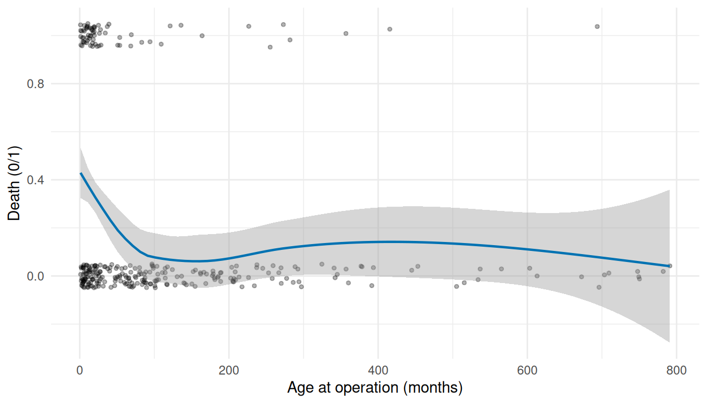
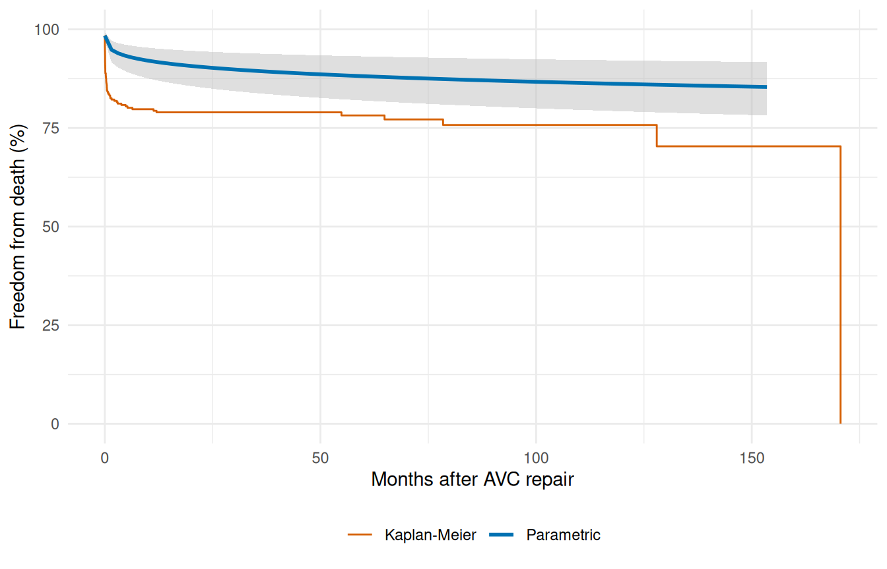
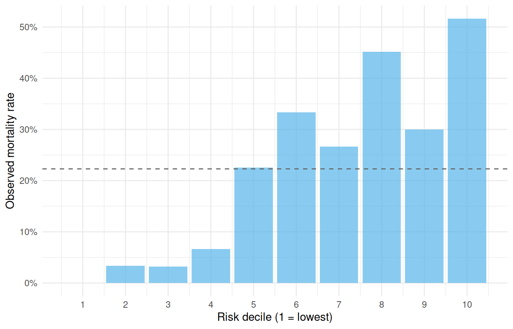
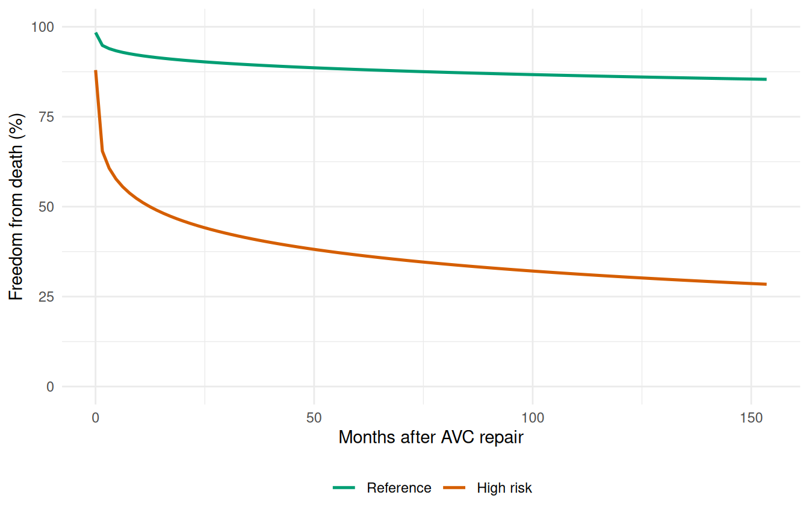

Inference & Diagnostics
Exploratory screening, bootstrap confidence intervals, and sensitivity analysis
Source:vignettes/inference-diagnostics.qmd
This vignette covers the diagnostic and inferential tools surrounding hazard model fitting: exploratory covariate screening, bootstrap confidence intervals, decile-of-risk validation, and sensitivity analysis across covariate scenarios. These correspond to the lg.*, bs.*, and hs.* steps in the classic HAZARD analysis workflow.
1 Exploratory covariate screening
Before fitting the parametric hazard model, it is useful to screen candidate covariates with simple logistic models. This identifies transformations and functional forms that should enter the final model.
Fit a univariable logistic regression for each covariate against the death indicator:
logit_fits <- lapply(candidates, function(var) {
fmla <- as.formula(paste("dead ~", var))
glm(fmla, data = avc, family = binomial())
})
names(logit_fits) <- candidates
# Which covariates are significant univariably?
p_values <- vapply(logit_fits, function(f) {
coef(summary(f))[2, "Pr(>|z|)"]
}, numeric(1))
data.frame(covariate = names(p_values),
p_value = round(p_values, 4),
row.names = NULL)
#> covariate p_value
#> 1 age 0.0017
#> 2 status 0.0000
#> 3 mal 0.0006
#> 4 com_iv 0.0000
#> 5 inc_surg 0.0114
#> 6 orifice 0.0034
ggplot(avc, aes(age, dead)) +
geom_jitter(height = 0.05, width = 0, alpha = 0.3, size = 1) +
geom_smooth(method = "loess", se = TRUE, colour = "#0072B2",
linewidth = 0.8) +
labs(x = "Age at operation (months)", y = "Death (0/1)") +
theme_minimal()
#> `geom_smooth()` using formula = 'y ~ x'
The LOESS smooth reveals the functional form of each covariate’s relationship to mortality, guiding decisions about transformations (log, polynomial) before the hazard model.
2 Bootstrap confidence intervals
Bootstrap resampling is the primary uncertainty quantification method in the HAZARD workflow. Each replicate refits the model on a resampled dataset and accumulates prediction curves; the CI is summarized across replicates.
# Fit the base model that bootstrapping will use
fit <- hazard(
Surv(int_dead, dead) ~ age + status + mal + com_iv,
data = avc,
dist = "weibull",
theta = c(mu = 0.20, nu = 1.0, rep(0, 4)),
fit = TRUE,
control = list(maxit = 500)
)
# Prediction grid at a median-risk profile
t_grid <- seq(0.01, max(avc$int_dead) * 0.9, length.out = 100)
base_nd <- data.frame(time = t_grid, age = median(avc$age),
status = 2, mal = 0, com_iv = 0)
surv_point <- predict(fit, newdata = base_nd, type = "survival")
set.seed(42)
n_boot <- 50 # kept small for vignette build time
boot_surv <- matrix(NA_real_, nrow = n_boot, ncol = length(t_grid))
for (b in seq_len(n_boot)) {
idx <- sample(nrow(avc), replace = TRUE)
boot_d <- avc[idx, ]
boot_fit <- tryCatch(
hazard(
Surv(int_dead, dead) ~ age + status + mal + com_iv,
data = boot_d,
dist = "weibull",
theta = coef(fit),
fit = TRUE,
control = list(maxit = 300)
),
error = function(e) NULL
)
if (!is.null(boot_fit)) {
boot_surv[b, ] <- predict(boot_fit, newdata = base_nd,
type = "survival")
}
}
# Remove failed replicates
ok <- !is.na(boot_surv[, 1])
boot_surv <- boot_surv[ok, , drop = FALSE]
message(sum(ok), " of ", n_boot, " bootstrap replicates converged")
#> 50 of 50 bootstrap replicates converged
ci_lo <- apply(boot_surv, 2, quantile, probs = 0.025) * 100
ci_hi <- apply(boot_surv, 2, quantile, probs = 0.975) * 100
ci_df <- data.frame(time = t_grid,
survival = surv_point * 100,
lower = ci_lo, upper = ci_hi)
km <- survfit(Surv(int_dead, dead) ~ 1, data = avc)
km_df <- data.frame(time = km$time, survival = km$surv * 100)
ggplot() +
geom_ribbon(data = ci_df, aes(time, ymin = lower, ymax = upper),
fill = "grey75", alpha = 0.5) +
geom_step(data = km_df, aes(time, survival, colour = "Kaplan-Meier"),
linewidth = 0.5) +
geom_line(data = ci_df, aes(time, survival, colour = "Parametric"),
linewidth = 1) +
scale_colour_manual(values = c("Parametric" = "#0072B2",
"Kaplan-Meier" = "#D55E00")) +
scale_y_continuous(limits = c(0, 100)) +
labs(x = "Months after AVC repair", y = "Freedom from death (%)",
colour = NULL) +
theme_minimal() +
theme(legend.position = "bottom")
3 Decile-of-risk validation
A standard model diagnostic: partition patients into deciles of predicted risk and compare observed vs. predicted event rates. Good calibration means the two track each other.
# Linear predictor = log-relative-hazard for each patient
lp <- predict(fit, type = "linear_predictor")
# Create deciles (handle ties gracefully)
decile <- cut(rank(lp, ties.method = "average"),
breaks = quantile(rank(lp, ties.method = "average"),
probs = seq(0, 1, by = 0.1)),
include.lowest = TRUE, labels = 1:10)
cal <- aggregate(avc$dead, by = list(Decile = decile), FUN = mean)
names(cal)[2] <- "observed"
cal$Decile <- as.integer(as.character(cal$Decile))
ggplot(cal, aes(Decile, observed)) +
geom_col(fill = "#56B4E9", alpha = 0.7) +
geom_hline(yintercept = mean(avc$dead), linetype = "dashed",
colour = "grey40") +
scale_x_continuous(breaks = 1:10) +
scale_y_continuous(labels = scales::percent_format(accuracy = 1)) +
labs(x = "Risk decile (1 = lowest)", y = "Observed mortality rate") +
theme_minimal()
4 Sensitivity analysis
Sensitivity analysis compares predictions across different covariate configurations to assess how the model responds to risk factor changes.
# Define reference and high-risk profiles
ref_profile <- data.frame(
age = median(avc$age),
status = 2,
mal = 0,
com_iv = 0
)
high_risk <- data.frame(
age = quantile(avc$age, 0.90),
status = 4,
mal = 1,
com_iv = 1
)
sens_curves <- do.call(rbind, lapply(
list("Reference" = ref_profile, "High risk" = high_risk),
function(p) {
nd <- p[rep(1, length(t_grid)), ]
nd$time <- t_grid
data.frame(time = t_grid,
survival = predict(fit, newdata = nd, type = "survival") * 100,
Profile = deparse(substitute(p)))
}
))
# Fix profile labels
sens_curves$Profile <- rep(c("Reference", "High risk"),
each = length(t_grid))
sens_curves$Profile <- factor(sens_curves$Profile,
levels = c("Reference", "High risk"))
ggplot(sens_curves, aes(time, survival, colour = Profile)) +
geom_line(linewidth = 0.9) +
scale_colour_manual(values = c("Reference" = "#009E73",
"High risk" = "#D55E00")) +
scale_y_continuous(limits = c(0, 100)) +
labs(x = "Months after AVC repair", y = "Freedom from death (%)",
colour = NULL) +
theme_minimal() +
theme(legend.position = "bottom")
The gap between the curves quantifies the clinical impact of the risk factors. The sensitivity analysis is most informative when combined with bootstrap confidence intervals on each curve, showing whether the difference is statistically meaningful.
5 Analysis workflow summary
The complete HAZARD analysis sequence, now implemented in TemporalHazard:
-
Exploratory screening (
glm) — identify covariate transformations and functional forms -
Kaplan-Meier baseline (
survfit) — nonparametric reference curve -
Fit hazard model (
hazard()) — parametric shape + covariates -
Predict & visualize (
predict()) — survival, hazard, risk profiles - Bootstrap CIs — uncertainty quantification via resampling
- Sensitivity analysis — compare scenarios across covariate settings
- Decile validation — calibration check
See vignette("getting-started") for the minimal workflow and vignette("fitting-hazard-models") for the model-fitting details.